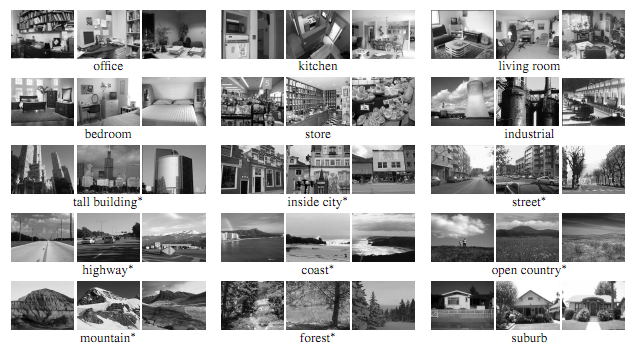
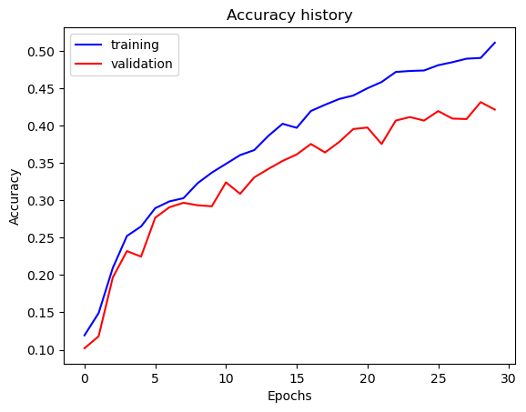
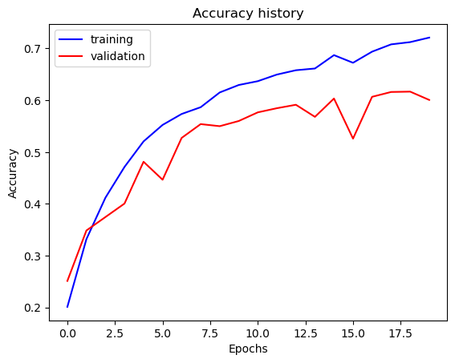
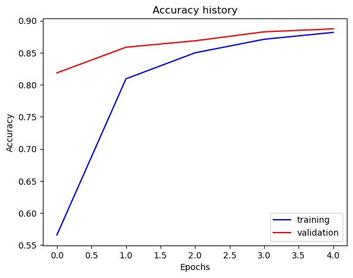
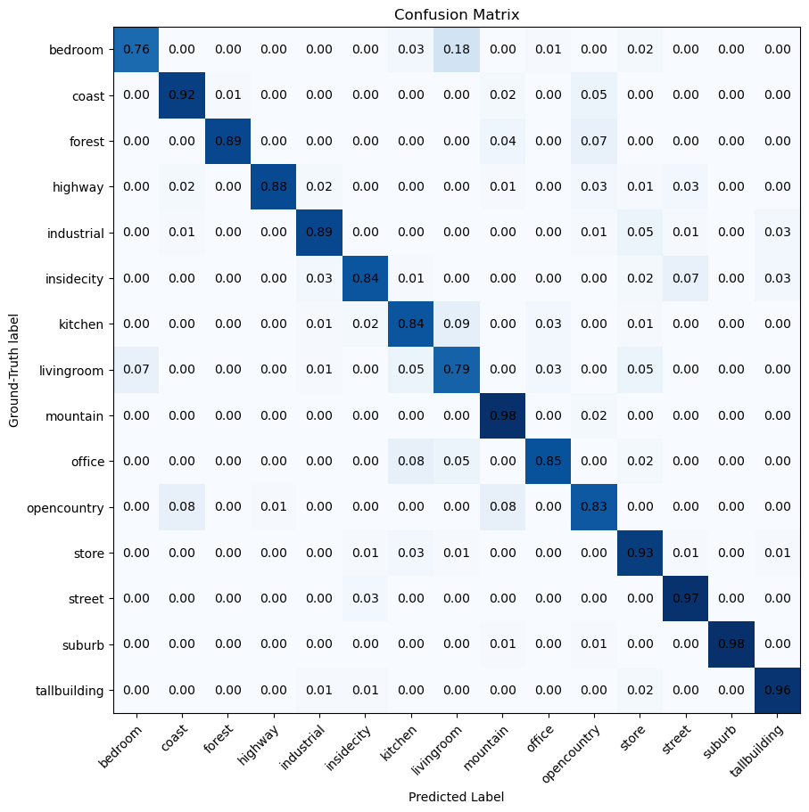

Scene recognition: from 42% to 89%
We trained a network to tell what kind of place a photo shows, from kitchens to coastlines. First a small CNN written from scratch, then the same network improved one change at a time, and finally a pretrained ResNet fine-tuned for our 15 classes, which more than doubled the accuracy we started with.
The 30-second version
- Built: an image classifier that sorts photos into 15 kinds of scene (kitchen, forest, highway, office…), in three rounds: a small CNN from scratch, an improved version of it, and a fine-tuned ResNet-18.
- Improved it by: adding data augmentation, normalising the inputs, dropout, more layers and batch normalisation, measuring each change on its own.
- Result: validation accuracy went from about 42% with the first network to about 60% with the improved one, and to about 89% by fine-tuning a pretrained ResNet.
Fifteen kinds of place
The task: given a photo, say what kind of place it is. The dataset has 15 categories, from bedrooms and kitchens to coasts, forests and tall buildings, with a few thousand mostly greyscale photos to learn from. It is small enough that a network can easily memorise it, which made it a good place to learn what actually helps a model generalise.

A small CNN from scratch
First we built the whole training loop ourselves: an image loader, the data transforms, a small convolutional network (two convolution blocks and two fully connected layers, about 57,000 parameters), the loss, the optimiser and the trainer that tracks loss and accuracy on both the training and validation sets.

Making it generalise
Then we attacked the gap between training and validation accuracy one change at a time, keeping each change and measuring what it did.
Jitter the data
Random horizontal flips, colour jitter and random crops, so every epoch sees slightly different versions of each photo. Not enough training data is the root problem, so this is the first fix.
Normalise the inputs
Subtract the dataset mean and divide by its standard deviation so every input has a similar scale. This was the single biggest jump.
Dropout
Randomly switching off units during training so the network cannot rely on any one feature.
Go deeper
Four convolution layers instead of two, with wider filter banks (up to 128 filters per layer).
Batch normalisation
Re-centring the activations after each layer, which made training faster and steadier.

Standing on a pretrained network
Finally, transfer learning. Instead of learning from a few thousand photos, we started from ResNet-18, already trained on millions of everyday images, froze its convolutional layers and replaced only the final layer with one that outputs our 15 scene classes. Only that small head is trained.


Why freezing works
The early layers of a network trained on millions of photos already detect edges, textures and object parts. Those are useful for almost any image task, so there is no need to relearn them from a small dataset. Freezing them also means far fewer parameters to train, which is faster and much harder to overfit.
What it taught me
- Change one thing at a time. Measuring each improvement separately showed that input normalisation mattered far more than adding depth.
- Watch the gap, not just the score. The distance between training and validation accuracy told me more than either number alone.
- Do not start from zero if you do not have to. A pretrained network beat everything we built by hand by almost 30 points in a handful of epochs. That is the lesson I use most in real AI work.
Key terms
- CNN
- Convolutional neural network: layers of learned filters followed by a classifier.
- data augmentation
- Randomly altering training images (flips, colour jitter) so the model sees more variety.
- dropout
- Randomly disabling units during training to stop the network relying on any one of them.
- batch normalisation
- Normalising each layer's outputs during training to keep them well-scaled.
- transfer learning / fine-tuning
- Starting from a network trained on a large dataset and retraining only part of it for a new task.
- confusion matrix
- A table of predicted vs. true classes; the diagonal is what the model gets right.